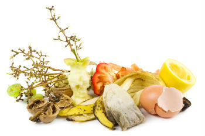
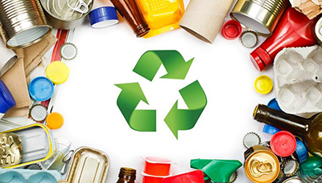
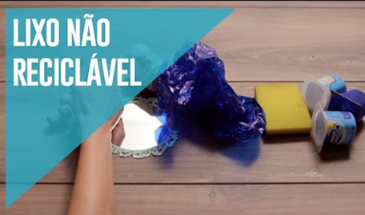

Como é descartado no cotidiano
O lixo doméstico, em sua maioria, é descartado de forma incorreta, pois não há a separação entre lixo orgânico, reciclável e não reciclável. Resíduos como óleo de cozinha, materiais hospitalares, produtos eletrônicos e seus componentes, vidros quebrados entre outros de risco; são descartados inconscientemente junto ao lixo comum.
Como separar da forma correta
Apenas 3% do lixo que produzimos diariamente é reaproveitado. Separá-lo é uma pequena ação, mas que gera grandes resultados positivos. Aprenda como o separar para ajudar o meio ambiente. Orgânicos/ Recicláveis/ Não Recicláveis
Orgânicos
Restos de alimentos são ótimos para compostagem. Cascas de fruta, verdura, ovo, qualquer tipo de lixo orgânico é bem vindo para produção desse adubo natural. Apenas tente evitar restos de comida.
Recicláveis

Papéis:
Folhetos, envelopes, cartolinas, velopes, cartões, folhas, jornais, papelão, revistas, fotocópias, caixas, papel de fax e impressos em geral.
Plásticos:
Sacos plásticos em geral, recipientes de higiene e limpeza, tampas, potes, frascos, embalagens de bebida, utilidades domésticas, PVC, peças de brinquedos, tubos e conexões e baldes.
Vidros:
Tampas, potes, frascos, garrafas, copos e embalagens.
Metais:
Tampas, latas de alumínio, latas de aço, ferragens, canos, esquadrias e molduras de quadros.
Não recicláveis

Papéis:
Papéis com gordura e sujos, adesivos, metalizados e fotografias.
Plásticos:
As embalagens metalizadas de chocolates m, biscoitos, entre outros, podem ser reciclados, porém o procedimento ainda é muito ignorado pelas empresas de reciclagem. O isopor pode ser é reciclado, todavia, grande parte das empresas nunca vêem vantagens na coleta desses resíduos, especialmente por serem um materiais que embora são leves, fazem muito volume, o que dificulta o seu deslocamento.
Metais:
Embalagens de materiais químicos, buchas de aço, latas de tinta e clipes e também metais.
Vidro:
Muitos itens de vidro são mais complicados de serem reaproveitados pois não há tecnologias apropriadas ou pelo motivo de seu método de reciclagem ser desinteressante economicamente, esses são os casos dos tubos de monitores, vidros de automóveis, espelhos, vidros temperados e outros.
Como descartar o lixo especial
Existem materiais que precisam de tratamentos específicos pois apresentam maiores riscos a saúde e ao ambiente. Aprenda a maneira certa de descartá-los. Óleo de cozinha/ Pilhas e Baterias/ 'Resíduos infectantes ou biológicos/ Eletrônicos, eletrodomésticos e móveis/ Resíduos químicos/ Destinação de corpos de animais
Óleo de cozinha:
Armazene em garrafas PET's e as guarde bem fechadas para evitar vazamentos. Pronto, agora é só encontrar o local de coleta mais próximo de você nos sites
eCycle,
Institudo Triângulo e
Prefeitura de SP
Pilhas e Baterias:
Armazene em uma embalagem plástica resistente para evitar o contato com a umidade e vazamento de líquidos. Agora ficou fácil, basta encontrar o local de coleta mais próximo da sua casa nos sites
eCycle e Greenk.
Resíduos infectantes ou biológicos:
São resíduos que apresentam possibilidade de estarem contaminados com agentes biológicos, tanto de seres humanos quanto de animais. Ache o ponto de entrega mais perto de você no site
eCycle.
Eletrônicos, eletrodomésticos e móveis:
Encontre locais de descarte:
Acesse o site da
Prefeitura de SP ou eCycle para encontrar o ecoponto mais próximo da sua casa. Para retirada de eletrônicos a domicílio acesso o site
Sucata Digital.
Resíduos químicos:
São materiais de limpeza, remédios vencidos e resíduos de materiais de laboratórios. Armazene em um local vedado e etiquetado para permitir a identificação do produto. Encontre um local de coleta acessando o site
eCycle.
• Outra opção para medicamentos vencidos é leva-los em pontos de coleta como farmácias e drogarias.
Destinação de corpos de animais
Como dar um destino digno ao corpo do bichinho de estimação morto? Existem empresas particulares que realizam o velório, mas também existe o serviço gratuito. Encontre o melhor local em
Mais informações
Observação: Ecopontos são locais de coleta de materiais para evitar seu abandono em locais indevidos
COMPOSTAGEM
Compostagem é uma prática incrível de reciclagem do lixo orgânico, pois o transforma em adubo natural, que pode ser usado na agricultura, substituindo o uso de produtos venenosos.
RECICLAGEM
Reciclagem é uma forma de reaproveitamento do lixo descartado. Nele, todo resíduo reciclável é transformado em novos materiais. A reciclagem pode ser feita por indústrias, mas também pode ser em casa, transformando potinhos, latas e afins em utilitários.